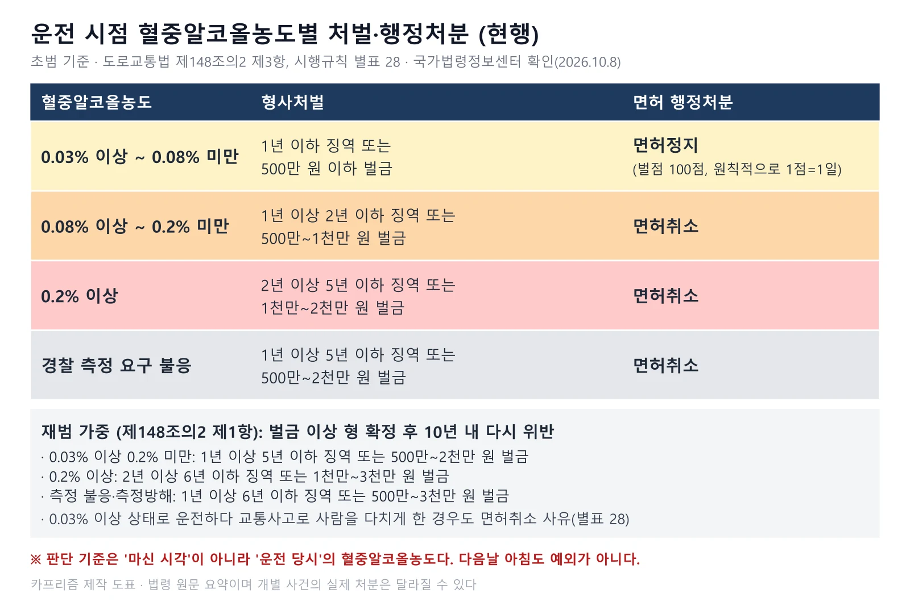
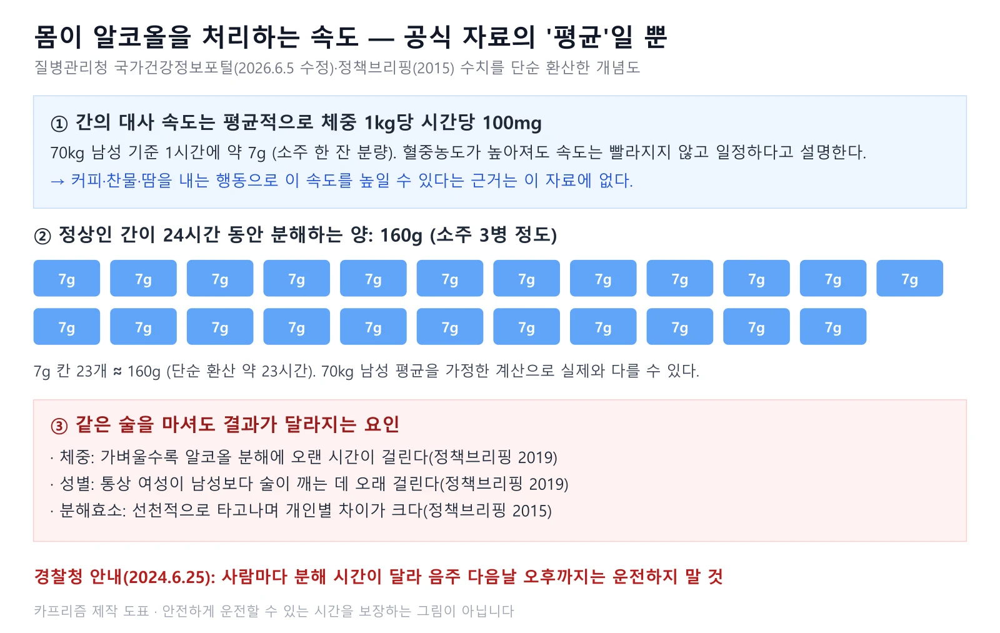
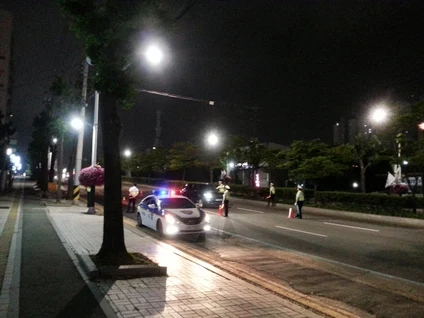
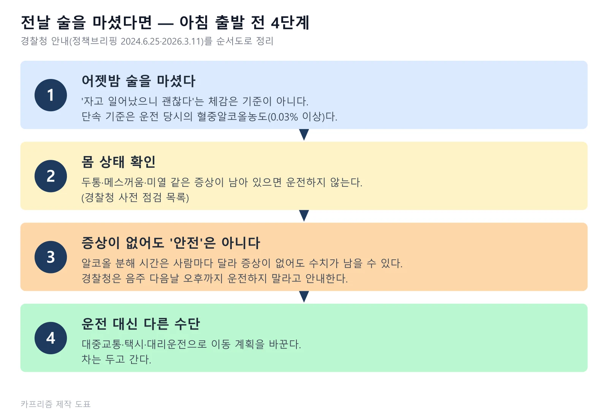
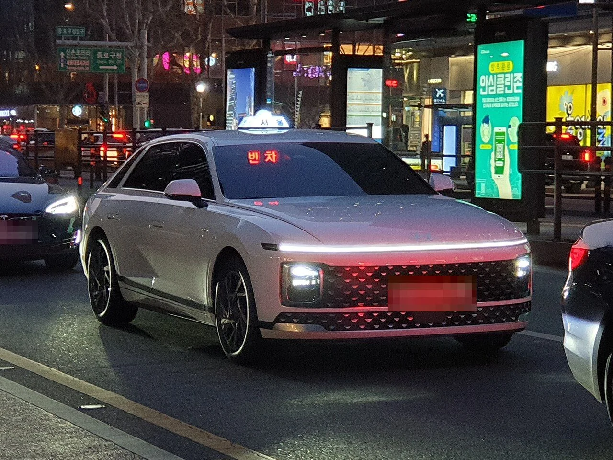
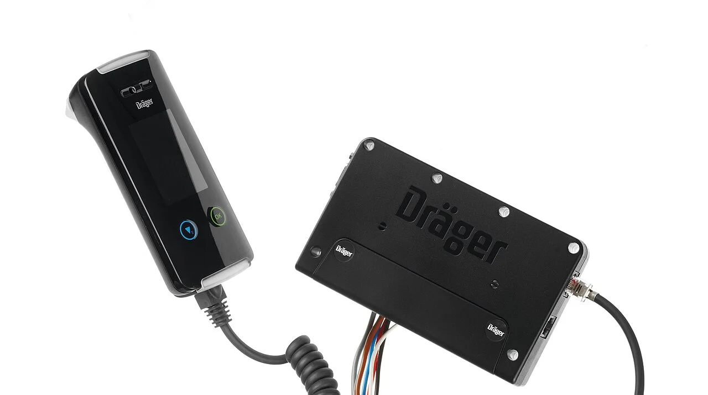
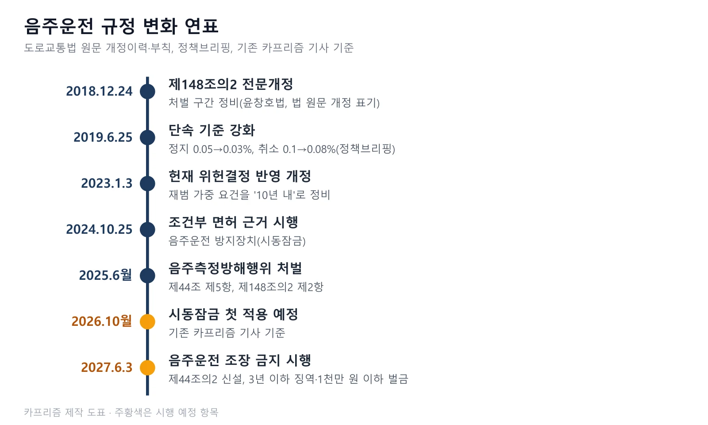

▲ 늦은 밤까지 붐비는 서울 도심 — 술자리가 늦어질수록 다음날 아침 운전 계획이 문제가 된다 ⓒ Wikimedia Commons / Tristan Surtel (CC BY-SA 4.0)
"어젯밤에 마셨지만 푹 자고 일어났는데, 아침 출근길에 걸릴까?" 이 질문에 숫자로 된 정답은 없다. 단속 기준은 마신 시각이 아니라 운전하는 순간의 혈중알코올농도(BAC)이고, 몸이 알코올을 분해하는 시간은 체중·성별·음주량·분해효소에 따라 사람마다 다르기 때문이다. 이 글은 국가법령정보센터의 도로교통법·시행규칙 원문(2026년 10월 8일 확인)으로 처벌·면허 기준을 대조하고, 경찰청·질병관리청·식약처 등 공식 자료가 숙취운전에 대해 말하는 내용만 추렸다. 안전하게 운전할 수 있는 시간을 알려 주는 글이 아니다. 공식 자료가 일관되게 권하는 것은 "마셨다면 운전하지 않는다"이다.
1. 숙취운전이 음주운전인 이유 — 기준은 '운전 당시 수치'
도로교통법에는 '숙취운전'이라는 별도 조항이 없다. 전날 마신 술이 몸에 남아 있어도 운전 당시 혈중알코올농도가 0.03% 이상이면 제44조 제1항 위반, 즉 음주운전이다. 제44조 제4항은 술에 취한 상태의 기준을 "운전자의 혈중알코올농도가 0.03퍼센트 이상인 경우"로 정한다. 경찰청이 정책브리핑에 올린 2026년 3월 11일자 안내도 "체감이 아니라 수치가 핵심"이라고 강조하며, 판단 기준은 마신 시각이 아니라 운전 당시의 농도라고 설명한다. 2024년 6월 25일자 경찰청 안내는 숙취운전을 "술이 완전히 깨지 않은 상태에서 운전을 하는 행위"로 정의하고 판단 능력과 반응 속도가 음주 직후와 차이가 없다고 적었다.
측정 절차도 조문에 있다. 경찰은 교통안전과 위험방지를 위해 필요하다고 인정하거나 음주운전을 했다고 볼 만한 상당한 이유가 있으면 호흡조사로 측정할 수 있고(제44조 제2항), 결과에 불복하면 운전자의 동의를 받아 혈액 채취 등으로 다시 측정한다(제3항). 술에 취한 상태라고 볼 만한 사람이 운전한 뒤 측정을 곤란하게 할 목적으로 추가로 술을 마시거나 BAC에 영향을 줄 수 있는 의약품 등을 쓰는 '음주측정방해행위'도 금지된다(제5항). 조문은 국가법령정보센터 도로교통법 에서 직접 확인할 수 있다.
2. BAC별 처벌과 면허 처분 — 현행 조문 원문으로 확인
형사처벌은 도로교통법 제148조의2 제3항, 면허 처분은 같은 법 제93조와 시행규칙 별표 28이 정한다. 아래 표는 2026년 10월 8일 국가법령정보센터에서 받은 현행 원문(법 시행일 2026년 7월 1일, 시행규칙 시행일 2026년 8월 24일)을 옮긴 것이다. 음주운전 기준은 2019년 6월 25일 정지 0.05%→0.03%, 취소 0.1%→0.08%로 강화됐다(정책브리핑 정책기자 기사, 2019.6.25).
| 혈중알코올농도 | 형사처벌(제148조의2 제3항) | 면허 처분(제93조, 별표 28) |
|---|---|---|
| 0.03% 이상 0.08% 미만 | 1년 이하 징역 또는 500만 원 이하 벌금 | 정지(벌점 100점, 원칙적으로 1점을 1일로 계산) |
| 0.08% 이상 0.2% 미만 | 1년 이상 2년 이하 징역 또는 500만~1천만 원 벌금 | 취소 |
| 0.2% 이상 | 2년 이상 5년 이하 징역 또는 1천만~2천만 원 벌금 | 취소 |
| 경찰 측정 요구 불응 | 1년 이상 5년 이하 징역 또는 500만~2천만 원 벌금(제148조의2 제2항) | 취소 |
| 음주측정방해행위 | 1년 이상 5년 이하 징역 또는 500만~2천만 원 벌금(제148조의2 제2항) | 취소(제93조 제1항 제3호의2) |
| 0.03% 이상 상태로 운전하다 교통사고로 사람을 사상 | 도로교통법 처벌에 더해 사고 결과에 따른 별도 처벌(경찰청 안내: 사망 시 무기 또는 3년 이상 징역, 부상 시 1~15년 징역·1천만~3천만 원 벌금) | 취소(별표 28) |

▲ 운전 당시 혈중알코올농도별 처벌과 면허 처분 — 0.03%와 0.08%가 갈림길이다 ⓒ 카프리즘 제작 도표 (국가법령정보센터 도로교통법 제148조의2·시행규칙 별표 28 기준)
재범이면 구간이 올라간다. 제148조의2 제1항은 음주운전 등으로 벌금 이상의 형이 확정된 날부터 10년 안에 다시 위반하면 0.03% 이상 0.2% 미만은 1년 이상 5년 이하 징역 또는 500만~2천만 원, 0.2% 이상은 2년 이상 6년 이하 징역 또는 1천만~3천만 원, 측정 불응·방해는 1년 이상 6년 이하 징역 또는 500만~3천만 원으로 정한다. 이 조항의 재범 요건은 2021년 11월 25일, 2022년 5월 26일, 2022년 8월 31일 헌법재판소 위헌결정이 잇따르자 2023년 1월 3일 개정으로 정비된 것이다(조문 부기 확인). 경찰청이 2024년 정책브리핑에 올린 처벌 안내 가운데 "0.2% 이상 2~6년, 0.03~0.2% 1~5년"이라는 수치는 이 재범 구간과 같아, 초범 처벌로 읽으면 안 된다.
면허를 잃은 뒤의 제약도 있다. 제82조 제2항에 따라 음주운전으로 2회 이상 위반해 취소되거나 음주운전 중 교통사고를 일으켜 취소되면 취소된 날부터 2년 동안 면허를 받을 수 없고, 사람을 사상한 뒤 구호조치와 신고를 하지 않은 경우 등은 5년이다. 취소 뒤에는 특별교통안전 의무교육을 받아야 면허를 다시 딸 수 있다(제82조 제3항).
3. "자고 일어나면 깨겠지" — 분해 속도는 평균일 뿐, 개인차가 크다
질병관리청 국가건강정보포털은 간의 알코올 대사를 "일반적으로 한 시간에 체중 kg당 100mg"으로 설명하고, 이 속도는 혈중 알코올 농도가 높아져도 빨라지지 않고 일정하다고 적었다. 이 설명대로면 70kg 남성은 1시간에 약 7g, 소주 한 잔 분량을 처리한다(포털 '알코올 간질환' 페이지, 2026.6.5 수정). 같은 포털의 '위험음주' 페이지(2026.5.8 수정)는 "개인마다 알코올 대사 능력에도 차이가 있으며"라고 적어, 평균 속도와 개인 능력을 함께 언급한다. 정책브리핑이 전재한 서울삼성병원 가정의학과 교수 설명(2015.12.3, 하이닥 원문)은 "정상인의 간이 24시간 동안 분해할 수 있는 알코올의 양은 160g(소주 3병, 맥주 16병 정도)"이며 알코올 분해효소는 "선천적으로 타고나며 개인별로 차이가 크다"고 했다.

▲ 공식 자료의 평균 수치를 단순 환산한 개념도 — 안전하게 운전할 수 있는 시간을 알려 주는 그림이 아니다 ⓒ 카프리즘 제작 도표 (질병관리청 국가건강정보포털·정책브리핑 수치 기준)
이 평균을 그대로 '몇 시간 지나면 괜찮다'로 바꿔 쓰면 위험하다. 이유는 세 가지다. 첫째, 평균은 70kg 남성 기준이고 정책브리핑 정책기자 기사(2019.6.25)는 "같은 술을 마셔도 몸무게가 가벼울수록 알코올 분해에 오랜 시간이 걸리는데, 통상 여성은 술이 깨는 데 남성보다 오랜 시간이 걸리는 것으로 나타났다"고 적었다. 둘째, 같은 기사의 위드마크 공식 추정 예시는 60kg 남성이 자정까지 소주 2병을 마셨을 때 7시간 뒤에도 약 0.041%로, 0.03%를 넘는다(추정이며 실제와 다를 수 있다). 셋째, 음주량·안주 등 먹은 음식·마신 시간도 최고 농도에 영향을 주지만, 이 조건별로 안전한 시간을 정리한 공식 자료는 찾지 못했다.
📍 '시간 계산기'를 믿으면 안 되는 이유
경찰청이 정책브리핑에 올린 2026년 3월 11일자 안내의 사전 점검 목록에는 "마지막 음주 시각 최소 10~14시간 이상 경과 권장"이라는 항목이 있다. 하지만 이는 '최소' 권장 기준이지, 그 시간이 지나면 운전해도 된다거나 단속 기준 아래라는 보증이 아니다. 같은 경찰청의 2024년 안내는 사람마다 분해 시간이 다르다며 음주 다음날 오후까지 운전하지 말라고 했다. 위드마크 공식 같은 계산식은 체중·성별 계수로 BAC를 추정하는 방식일 뿐, 개인의 실제 수치를 대신하지 못한다. 확신이 서지 않으면 운전하지 않는 것이 원칙이다.
4. 실제 단속 사례와 통계 — 확인된 것과 확인하지 못한 것
2026년 7월 30일 오전 7시 30분께 전북 전주 완산경찰서가 출근길 불시 숙취운전 단속을 벌여 40대 운전자가 혈중알코올농도 0.085%로 적발됐다. 운전자는 "어제 12시까지 먹고 아침에 나왔는데 수치가 갑자기 떠서"라고 말했다고 뉴시스가 전했다(기사 제목은 '어제 두 병 마셨는데'). 0.085%는 초범 기준 면허취소 구간이다. 오전 8시 직전(7시 55분께)에는 다른 운전자가 여러 차례 재측정 끝에 0.058%로 적발됐다(전북일보 보도). 두 운전자 모두 이전 음주운전 적발 경력이 있다고 보도돼, 앞의 구간표(초범 기준)가 그대로 적용되는 사례로 읽으면 안 된다. 전북경찰청은 올해 여름 7월 1일부터 8월 31일까지 음주운전 집중단속 기간을 운영했고, 경찰 관계자는 많은 운전자가 숙취운전은 음주운전이 아니라고 생각하지만 숙취운전도 명백한 음주운전이라고 말했다(뉴시스·전북일보). 뉴시스 기사 보기

▲ 야간 도로에서 이뤄지는 음주단속 — 경찰청은 단속이 주야간을 가리지 않고 연중 이뤄진다고 안내한다 ⓒ Wikimedia Commons / 메이 (CC BY-SA 1.0)
| 자료 | 확인된 내용 | 비고 |
|---|---|---|
| 정책브리핑 정책기자(2019.6.25, 경찰 자료 인용) | 2013~2015년 3년간 음주운전 적발 건수는 꾸준히 줄었지만 아침 5~8시 출근 시간대 음주단속 건수는 꾸준히 늘었다(원문 표현은 '단속 건수'). 5월 자료에서 0.03~0.05% 적발자의 약 10%가 오전 시간대였다. | 7년 이상 지난 자료. 최신 수치는 확인하지 못했다 |
| 한국도로교통공단 보도자료(2023.12.22) | 2018~2022년 분석에서 음주운전 사고는 금요일 밤 22~24시에 가장 많이 발생했고, 전날 술을 많이 마셨다면 숙취운전도 주의해야 한다고 당부했다. | 해당 보도자료는 오전 시간대 수치를 싣지 않았다 |
| 전주 완산경찰서 단속(2026.7.30) | 오전 7시 30분께 0.085%(취소 구간), 7시 55분께 0.058%(초범이면 정지 구간) | 단일 현장 사례, 두 운전자 모두 음주운전 전력 보도. 전국 비율로 일반화할 수 없다 |
| 경찰청 정책브리핑(2023.12.1) | 연말연시 집중단속 12월 1일~1월 31일, 주야간 불문, 목요일 전국 일제단속. 전년 대비 음주운전 사고 17.7% 감소(12,273건→10,101건), 사망 46.6% 감소(95명) | 2023년 기준. 올해 연말 단속 계획은 확인하지 못했다 |
일부 언론은 오전 시간대 숙취운전 사고가 몇 년 사이 늘었다는 건수를 전했지만, 해당 기사와 경찰·도로교통공단 원자료에서 같은 수치를 확인하지 못해 이 글에서는 쓰지 않았다. 다음날 오전 음주운전 적발 비율의 최신 공식 통계는 확인하지 못했다. 도로교통공단 교통사고분석시스템(TAAS)이나 경찰청 공공데이터에서 직접 조회하는 방법이 있다.
5. 흔한 오해 — 공식 자료가 말하는 것과 말하지 않는 것
커피·찬물·숙취해소제로 술을 깨고 운전해도 된다는 공식 근거는 찾지 못했다. 아래 표는 공식 자료에서 확인되는 내용과 확인하지 못한 내용을 구분했다. 숙취해소제는 "BAC에 영향이 없다"는 공식 자료도 없고, 일부 제품이 시험에서 수치 개선을 보였다는 자료는 있지만 운전과 연결한 안내는 없다.
| 흔한 오해 | 공식 자료에서 확인된 것 | 확인하지 못한 것 |
|---|---|---|
| "푹 잤으니 깼겠지" | 판단 기준은 운전 당시의 수치이며 체감이 아니다(경찰청 2026.3.11). 같은 술도 체중이 가벼울수록, 여성일수록 분해에 오래 걸린다(정책브리핑 2019) | 수면 시간과 BAC 감소량의 관계를 다룬 공식 자료 |
| "커피나 찬물을 마시면 깬다" | 찬물·커피·억지 구토는 큰 도움이 안 되고, 카페인은 기분을 일시적으로 올려도 "알코올 작용을 낮추지는 않는다"(정책브리핑 전재 기사, 2015.12.3) | 식약처·질병관리청 직접 문서(전문가 설명을 담은 전재 기사 기준) |
| "땀을 빼면(사우나·운동) 빨리 깬다" | 질병관리청은 간의 알코올 대사 속도가 일정하며 혈중 농도가 높아져도 빨라지지 않는다고 설명 | 사우나·땀과 BAC의 관계를 직접 다룬 공식 자료 |
| "숙취해소제를 먹었으니 괜찮다" | 식약처는 2025년 6월 실증 결과 46개 업체 89개 품목 중 39개사 80개 품목(90%)이 효과를 입증했다고 밝혔고, 평가에는 혈중 알코올·아세트알데히드 분해 수치 개선 여부가 포함됐다. 식약처 관계자는 숙취 증상이 개인차가 커 공통된 개선 효과를 입증하기 어렵다고 말했다(약사공론 2025.6.19) | 숙취해소제를 마신 뒤 운전이 가능하다는 안내는 없다. 단속 기준 0.03% 아래로 내려간다는 보증도 없다 |
| "멀쩡한데 설마" | 숙취운전은 판단 능력과 반응 속도가 음주 직후와 차이가 없다고 경찰청이 안내(2024.6.25) | — |
| "측정에 안 응하면 덜 처벌받겠지" | 측정 불응은 1년 이상 5년 이하 징역 또는 500만~2천만 원 벌금, 면허취소 대상이다(제148조의2 제2항, 제93조) | — |
경찰청 안내도 대안을 이렇게 정리한다. 대중교통이나 대리운전을 이용하고, 술을 마신 날뿐 아니라 그다음 날까지 자가용 대신 대중교통을 쓰는 것도 방법이라고 했다. 공식 자료 링크는 경찰청 안내 보기 에서 확인할 수 있다.
6. 전날 마셨다면 — 단계별 체크리스트
체크리스트의 핵심은 '운전할 수 있는지 계산'이 아니라 '운전하지 않는 쪽으로 계획을 바꾸는 것'이다. 아래 순서는 경찰청 안내(2024.6.25, 2026.3.11)를 따랐다.

▲ 전날 술을 마셨다면 아침 출발 전 4단계 — 마지막은 운전하지 않는 선택이다 ⓒ 카프리즘 제작 도표 (경찰청 정책브리핑 안내 정리)
- 전날 술을 마셨다면 '운전 가능'을 전제로 계획하지 않는다. 아침 일정이 있다면 전날 저녁부터 이동 수단을 정해 둔다.
- 두통·메스꺼움·미열이 있으면 운전하지 않는다. 경찰청 사전 점검 목록은 이런 증상이 있으면 운전을 금하라고 한다.
- 증상이 없어도 안전하다는 뜻이 아니다. 분해 시간은 사람마다 달라 증상이 없어도 수치가 남을 수 있다. 경찰청은 음주 다음날 오후까지 운전하지 말라고 안내한다.
- 대중교통·택시·대리운전을 이용한다. 차는 두고 간다.
- 단속에 걸렸다면 측정에 응한다. 불응하면 그 자체로 처벌·면허취소 대상이다. 결과에 불복하면 동의를 받아 혈액 채취 등으로 다시 측정할 수 있다(제44조 제3항).
✅ 출발 전 3초 점검
- 어젯밤 술을 마셨는가? → 마셨다면 오늘은 운전 대신 다른 수단을 쓴다.
- 몸에 증상이 있는가? → 있다면 운전 금지.
- "괜찮은 것 같다"는 느낌만으로 결정하려는가? → 기준은 느낌이 아니라 수치다.
7. 동승자·술 제공자·차량 제공자 — 현행법과 2027년 6월 시행 신법
도로교통법 현행 원문에는 음주운전 '방조'라는 조항이 없다. 이 글을 쓰며 2026년 10월 8일 현행 도로교통법 원문 전체를 대조했지만, 제44조에도 제148조의2에도 동승자나 술 제공자를 직접 처벌하는 조항은 찾지 못했다. 현재는 형법 제32조가 적용될 수 있다. 제1항은 "타인의 범죄를 방조한 자는 종범으로 처벌한다", 제2항은 "종범의 형은 정범의 형보다 감경한다"고 정한다. 어떤 행동이 방조에 해당하는지는 법원이 개별 사건에서 판단하며, 이 글에서는 법률사무소 블로그 설명을 근거로 쓰지 않았고 공식 해석 자료와 판례도 확인하지 못했다.
2027년 6월 3일부터는 별도 조항이 생긴다. 2026년 6월 2일 공포된 개정 도로교통법(법률 제21728호, 부칙상 공포 후 1년 경과일 시행)은 제44조의2를 신설해, 운전자가 술에 취한 상태임을 알면서 다음 중 하나를 해 음주운전을 하도록 조장하는 것을 금지한다. 위반하면 3년 이하 징역 또는 1천만 원 이하 벌금(제148조의2 제7항 신설)이다.
| 금지 행위 | 조문 표현 | 처벌 |
|---|---|---|
| 차량 제공 | 그 운전자에게 자동차등 또는 노면전차를 제공하는 행위 | 3년 이하 징역 또는 1천만 원 이하 벌금(제148조의2 제7항) |
| 운전 권유·독려 | 그 운전자에게 운전을 하도록 권유하거나 독려하는 행위 | |
| 동승 요구 | 그 운전자에게 운송을 요구하여 그 운전자가 운전하는 자동차등 또는 노면전차에 동승하는 행위 |
요건은 "운전자가 술에 취한 상태임을 알면서"다. 술을 따라 준 행위 자체를 처벌하는 문구는 신설 조문에 없다. 숙취운전과 연결하면, 전날 같이 마신 직원이나 가족에게 "아침에 데려다 달라"고 요구하는 것이 동승 요구에 해당할 수 있는지는 해석 문제로, 아직 시행 전이라 판례나 공식 해석은 확인하지 못했다.

▲ 모임 뒤 귀가 수단을 정해 두는 것이 첫 단계다 — 택시는 가장 단순한 선택지 중 하나다 (번호판은 모자이크 처리) ⓒ Wikimedia Commons / Damian B Oh (CC BY-SA 4.0)
8. 음주운전 방지장치(시동잠금) — 재범자부터 2026년 10월 적용
이번 글은 숙취운전이 중심이지만, 상습 음주운전자를 대상으로 한 시동잠금장치 제도도 같은 법 체계에 있다. 제80조의2 제1항은 음주운전 등을 한 날부터 5년 안에 다시 위반해 면허취소 처분을 받은 사람이 운전하려면 시·도경찰청장으로부터 '음주운전 방지장치 부착 조건부 운전면허'를 받아야 한다고 정한다. 장치는 해당 결격기간과 같은 기간 부착하고 결격기간이 끝난 다음 날부터 기간을 센다(제2항). 다른 사람이 대신 호흡을 불어넣어 시동을 거는 행위도 금지된다(제50조의3 제5항).

▲ 해외 제조사의 음주운전 방지장치 제품 예시 — 국내 시행 제도에 설치되는 장치와 같다는 뜻은 아니다 ⓒ Wikimedia Commons / Ninapayan (CC BY-SA 4.0)
제도의 시행 시점과 대상, 비용, 해외 사례는 카프리즘의 "술 마시면 시동이 안 걸린다"… 2026년 10월, 재범자부터 적용된다 기사를 기준으로 삼는다. 이 기사에 따르면 법은 2024년 10월 시행됐고 실제 부착 사례는 결격기간을 거친 뒤인 2026년 10월부터 나온다. 관련 별도 기사인 음주운전 방지장치 조건부 면허, 10월 24일 첫 적용은 첫 적용일을 10월 24일로 적었다. 이 날짜는 도로교통법 조문이나 부칙에는 없고, 경찰청 '2026년 달라지는 도로교통법령' 자료의 '최초 적용일 2026. 10. 24.' 표기(법률 제19745호, 2023.10.24 공포·2024.10.25 시행 언급)와 일치한다. 법 시행 직후 취소된 재범자도 최소 2년의 결격기간을 거쳐야 하기 때문이라는 취지다. 다만 개별 대상자의 실제 조건부 면허 발급일은 처분일과 결격기간 종료일에 따라 달라지므로 경찰청 안내를 따로 확인해야 한다.
📍 음주운전 규정 변화 한눈에
2018년 12월 24일 제148조의2 전문개정, 2019년 6월 25일 단속 기준 강화, 2023년 1월 3일 헌재 위헌결정 반영 개정, 2024년 10월 25일 조건부 면허 근거 시행, 2025년 6월 4일 음주측정방해행위 처벌 시행(법률 제20544호, 2024.12.3 공포), 2026년 10월 시동잠금 첫 적용(경찰청 표기 10월 24일), 2027년 6월 3일 조장 금지 시행 순이다.

▲ 음주운전 규정은 단속 기준, 재범 대책, 조장 금지로 계속 넓어지고 있다 ⓒ 카프리즘 제작 도표 (도로교통법 개정이력·부칙 기준)
9. 연말 모임 시즌 실전 팁 — 공식 근거가 있는 것만
연말에는 술자리가 늦어지고 다음날 아침 출근 일정이 겹친다. 경찰청이 정책브리핑에 올린 2023년 12월 1일자 자료에 따르면 연말연시 집중단속은 12월 1일부터 이듬해 1월 31일까지였고, 주야간을 가리지 않고 시간·장소를 수시로 바꿔 진행했으며 목요일에는 전국 일제단속을 했다. 올해 연말 단속 계획은 이 글을 쓴 시점에 확인하지 못했다. 공식 근거가 있는 실전 팁은 다음과 같다.
| 상황 | 권장 행동 | 근거 |
|---|---|---|
| 저녁 모임 때문에 차를 가져가야 한다 | 애초에 차를 두고 가거나 모임 장소를 대중교통으로 갈 수 있는 곳으로 정한다 | 경찰청: 대중교통·택시·대리운전 이용 권고(2026.3.11) |
| 늦게까지 마셨고 다음날 아침 출근이 있다 | 다음날도 자가용 대신 대중교통을 쓴다 | 경찰청 2024.6.25 안내 |
| 같이 마신 사람이 "내가 운전할게"라고 한다 | 마신 사람은 운전하지 않는다. 시행 예정인 제44조의2는 운전 권유·차량 제공을 금지한다 | 도로교통법 제44조 제1항, 제44조의2(2027.6.3 시행) |
| 대리운전을 불렀다 | 차량을 맡긴 뒤 주차 위치를 확인한다. 대리기사가 둔 위치를 모르면 차를 찾는 데 시간이 걸린다 | 카프리즘 축제장 주차 사례 기사 |
| 단속을 만났다 | 측정에 응한다. 불복하면 혈액 채취 등 재측정을 요청할 수 있다 | 도로교통법 제44조 제2·3항 |
음주 사고의 실태와 계절별 특성은 8월 음주운전 통계 기사와 "비 오는 날은 단속 안 하겠지" 설문 기사에, 면허 벌점 구조는 벌점 40점 기사에, 약물운전은 감기약 운전 기사에, 졸음운전은 졸음운전 예방 가이드에 따로 정리해 두었다. 숙취로 몸 상태가 나쁜 날 운전이 위험한 이유는 졸음운전과도 맞닿아 있다.
10. 요약
숙취운전도 운전 당시 혈중알코올농도가 0.03% 이상이면 음주운전이다. 초범 기준으로 0.03% 이상 0.08% 미만은 1년 이하 징역 또는 500만 원 이하 벌금과 면허정지(벌점 100점), 0.08% 이상 0.2% 미만은 1년 이상 2년 이하 징역 또는 500만~1천만 원과 면허취소, 0.2% 이상은 2년 이상 5년 이하 징역 또는 1천만~2천만 원과 면허취소다. 측정 불응과 측정방해는 1년 이상 5년 이하 징역 또는 500만~2천만 원에 면허취소다. 재범이면 구간이 더 올라간다.
'몇 시간 지나면 안전하다'는 공식 답은 없다. 질병관리청은 간의 평균 대사 속도를 시간당 체중 1kg당 100mg(70kg 남성 약 7g)으로 설명하지만, 체중·성별·분해효소·음주량에 따라 달라지고 경찰청은 음주 다음날 오후까지 운전하지 말라고 안내한다. 커피·찬물이 BAC를 낮추지 못한다는 전문가 설명은 있으나, 사우나·땀과 숙취해소제에 대해서는 운전 가능을 뒷받침하는 공식 자료를 확인하지 못했다. 동승자·술 제공자는 현재 형법 제32조 종범으로 다뤄질 수 있고, 2027년 6월 3일부터는 제44조의2가 운전 권유·차량 제공·동승 요구를 3년 이하 징역 또는 1천만 원 이하 벌금으로 처벌한다. 전날 마셨다면 운전 대신 대중교통·택시·대리운전으로 계획을 바꾸는 것이 유일하게 확실한 방법이다.